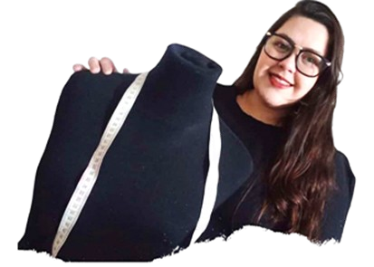

Soy Juliane, carioca y apasionada por el arte desde pequeña, gracias a la influencia de mis abuelas, quienes me enseñaron tricot, crochet, artes con telas, pintura en telas y fibrofacil. Luego me mudé a Buenos Aires, donde conocí el Instituto de Alta Moda Roberto Piazza. En esta academia de moda estudié para convertirme en Modista Modelista de Alta Costura y me gradué en 2019 con el reconocimiento de mejor alumna. No quise guardar este conocimiento solo para mí, así que emprendí un nuevo proyecto: enseñar a otras chicas este increíble mundo de la moda. Con la pandemia, el curso se convirtió en línea, lo cual resultó ser una excelente decisión, ya que las alumnas pueden realizar el curso desde la comodidad de sus hogares, con contenido didáctico y clases en tiempo real. En definitiva, puedo definirme como una profesora apasionada por enseñar y por la alta costura.
 El término “alta costura” proviene del francés Haute Couture y se enfoca en la creación de prendas artesanales diseñadas para un único cliente. Entre las principales características de este concepto destacan el buen gusto, la originalidad, el proceso de creación artesanal, el tipo de telas utilizadas y la combinación de las mismas.
-Prendas confeccionadas con telas de alta calidad
-Considera el cuerpo y los gustos del cliente
-Crea exclusividad
-Aumenta el valor de las prendas